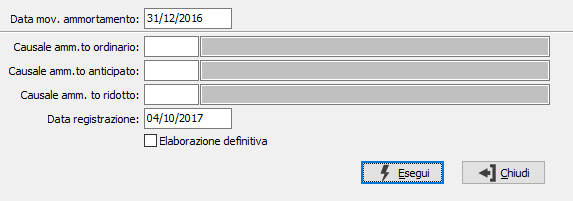

Contabilizzazione ammortamenti
Il programma effettua la contabilizzazione degli ammortamenti precedentemente generati dall'apposita procedura, producendo un report di controllo. Vengono generati movimenti contabili caratterizzati dalle causali contabili inserite dall’utente. A tale proposito, si ricorda che queste causali devono contenere la spunta sulla casella "Esercizio precedente" se le scritture contabili vengono generate con una data di registrazione dell’esercizio successivo a quello di competenza.
Tali movimenti contabili contengono i codici dei sottoconti contabili memorizzati in ciascuna categoria fiscale.
Per i cespiti nella cui anagrafica è indicata una percentuale di indetraibilità (come ad esempio i telefoni cellulari), la scrittura contabile attribuisce al conto Fondo ammortamento in avere l'intero ammontare della quota, che invece viene ripartita tra i conti Quota ammortamento e Quota ammortamento indeducibile in dare.

DATA MOVIMENTI AMMORTAMENTO: inserire la data di generazione dei movimenti di ammortamento inserita quale parametro nel programma di generazione ammortamento. Generalmente è l’ultimo giorno dell’esercizio per il quale vengono generati gli ammortamenti.
CAUSALE AMMORTAMENTO ORDINARIO: indicare il codice della causale contabile utilizzato per la contabilizzazione degli ammortamenti ordinari. Sul campo sono attive le funzioni di ricerca (F9).
CAUSALE AMMORTAMENTO ANTICIPATO: indicare il codice della causale contabile utilizzato per la contabilizzazione degli ammortamenti anticipati. Sul campo sono attive le funzioni di ricerca (F9).
CAUSALE AMMORTAMENTO RIDOTTO: indicare il codice della causale contabile utilizzato per la contabilizzazione degli ammortamenti ridotti. Sul campo sono attive le funzioni di ricerca (F9).
DATA DI REGISTRAZIONE: inserire la data di registrazione dei movimenti contabili di ammortamento. Può essere una data del nuovo esercizio, ma in tal caso occorre che le causali contabili relative alle quote di ammortamento contengano la spunta nella casella "Esercizio precedente".
ELABORAZIONE DEFINITIVA: definisce se stampare solo il report di controllo, oppure stampare il report e generare i movimenti contabili (casella con segno di spunta).